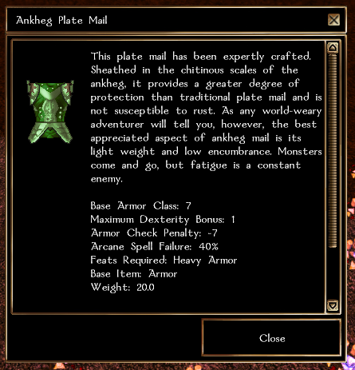

This is a low magic server. RP is optional.
You will find yourself in Neverwinter, amid the chaos of the Wailing Death, in a reimagining of the original campaign. Beyond the walls of Neverwinter, there are also ways to reach some areas from the official expansions. The adventures in this world are based around official content, mainly Neverwinter and the surrounding areas, with stories and locations from the original campaign, Hordes of the Underdark, Neverwinter Nights 2, Icewind Dale, and much more.
Expect to find yourself questing and clearing dungeons and visiting familiar places.
This server is heavily inspired from a server in 1.69 called "3 Towns". The encounters in this server are based off of that, as you will encounter challenging parties of melee warriors, ranged archers, and even spellcasting mages that you will have to deal with in your adventure.
In places of great danger, you may need to not only be stocked up with potions, healing kits, and perhaps henchman or two, but also resort to tactics such as pulling enemies one by one or preventing their friends from getting line of sight and coming to their aid. Ranged attackers will try to keep their distance and kite their enemies, while casters may try to crowd control or stun the enemy so their friends can overpower them. Enemy healers that patch up and buff their friends. Casters will take advantage of summons and familiars as well.
The loot in this server has been heavily balanced and modified. A lot of servers use completely random items with affixes and prefixes. In fact, those servers tend to use it for all of their items.
We do not believe in using that, as all you get is an item without much meaning or story. With randomly generated items, you will never get close to a weapon that fine-tuned and hand-tailored. As such, we have faithfully re-created items from classics such Baldur's Gate, Planescape: Torment, and other cRPG classics with their matching description and flavor text.
They have also been created and tweaked in mind with maintaining a balance in the server and making all classes be useful, so you won't get a Golden Circlet with mind-immunity, but one with improved saving throws vs. mind affecting spells. There's over 1200+ unique items.
Since the server is balanced for level 12, the maximum enhancement bonus is +3 and has the goal of low magic. You will not encounter items with immunities here, nor item properties that can invalidate a class, such as permanent Haste, True Seeing, Improved Evasion, etc.
All skills and abilities should be useful in this server. Here are a few examples: